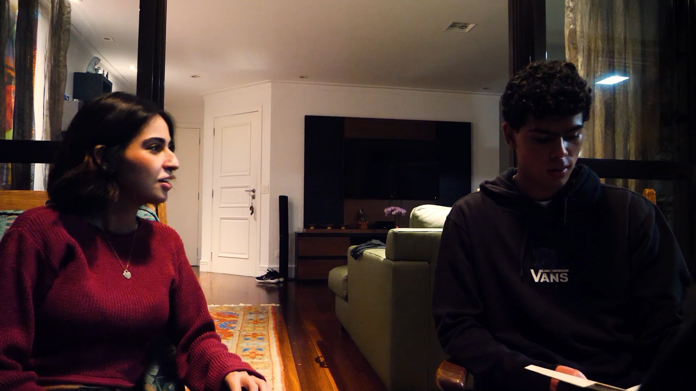
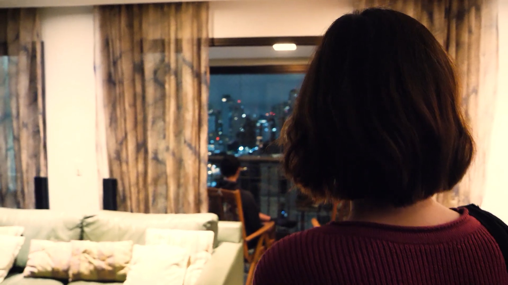
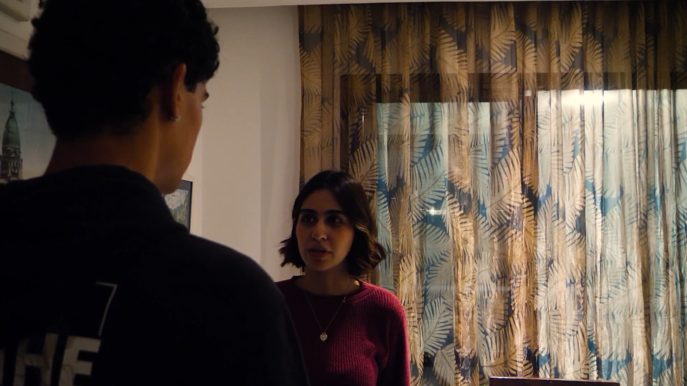
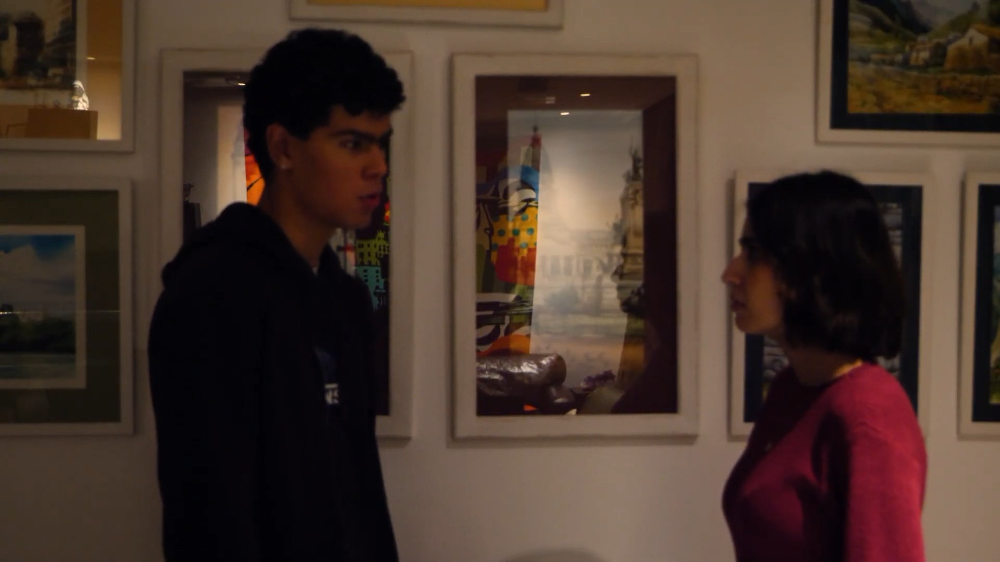

Edição · 2024
Exercício Maid
Projeto de edição audiovisual do curta-metragem Maid, dirigido por Sofia Pavan.
EDI

- Categoria
- Edição
- Função
- Editora de vídeo
- Ano
- 2024
- Programa de edição
- Adobe Premiere Pro
Sobre o
projeto
Adaptação de uma cena de MAID Julia chega tarde em casa e Pedro está cansado de proteger alguém que não quer ser protegida.
Link do curta ↗Frames & bastidores



Ficha técnica
- Edição
- Julia Figueirôa
- Direção
- Sofia Pavan
- Produção
- Maria Clara Fracaro
- Instituição
- FAAP